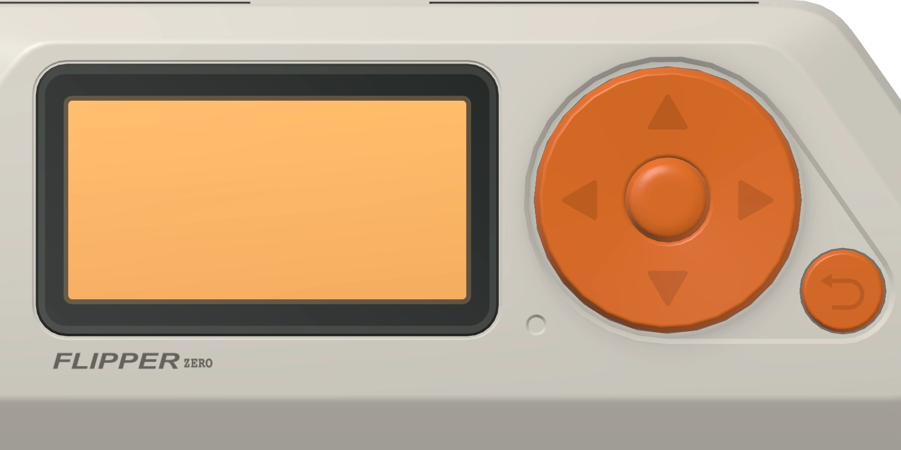

Eddy
Eddy

Eddy
Firmware
A new home for your Flipper Zero. Meet Eddy the dolphin in this open-source fork of Momentum Firmware.
Install Eddy Firmware Try the home screenPlug in.
Insert your microSD card and connect your Flipper Zero with a USB data cable. Close qFlipper so the web installer can use the port.
Load Eddy.
The web installer opens Flipper Lab with the Eddy main build selected. Connect your device, confirm the update and leave it plugged in through the restart.
Meet Eddy.
Press the orange center button to open Eddy’s menu. Try the arrows, then the small back button.
Arrow keys move, Enter opens, and Escape goes back. The preview uses sample data.Install Eddy.
For Flipper Zero with a microSD card and USB data cable. Use desktop Chrome or Edge for the web installer.
Flipper Zero F7
Checking for an Eddy build…
Open web installer Download for qFlipper Source for this build